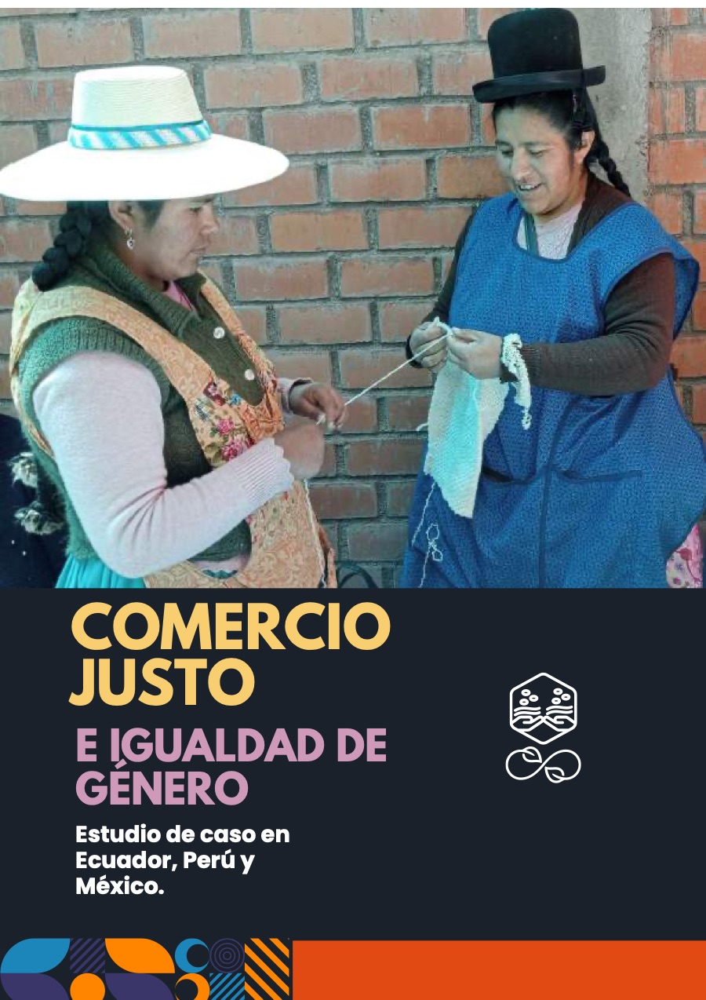

Investigación realizada por un equipo multidisciplinar integrado por personal académico, organizaciones de comercio justo e instituciones públicas de América Latina y el Estado español, además de medicusmundi Araba, sobre los avances en igualdad de género obtenidos en iniciativas de comercio justo. Estudio financiado por la Agencia Vasca de Cooperación para el Desarrollo.
Informes especializados · 2023
Comercio justo e igualdad de género. Estudio de caso en Ecuador, Perú y México
Medicus Mundi Internacional y Agencia Vasca de Cooperación para el Desarrollo
